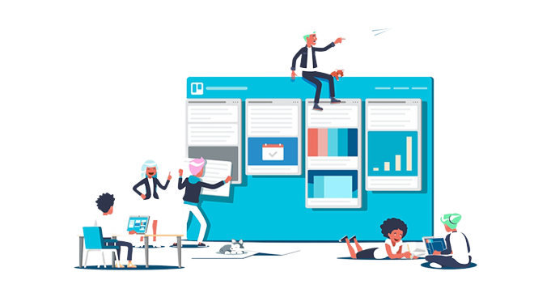
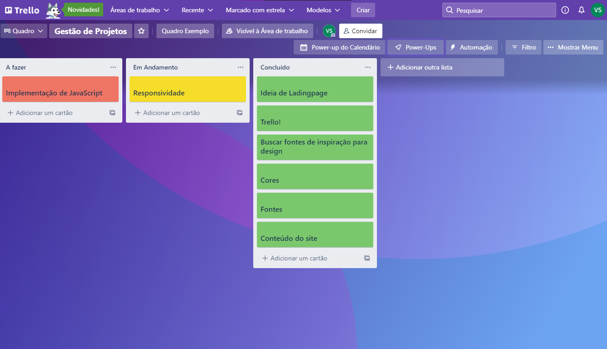
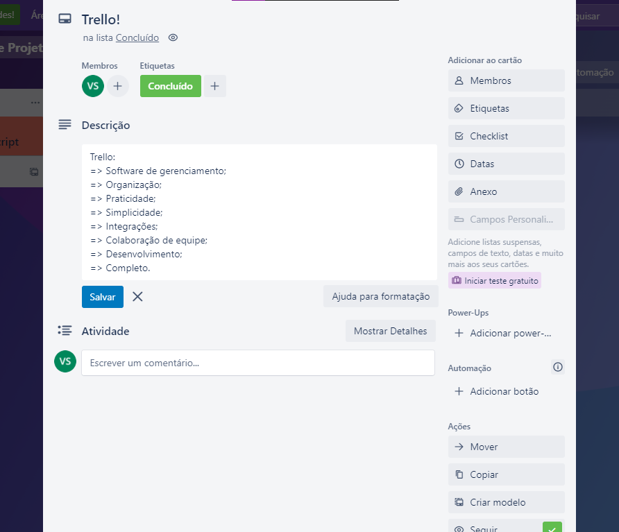

Mais organização?
Melhor controle do tempo?
Venha para o Trello !

Seu melhor amigo para o
controle e gestão de projetos.

~Quadro de desenvolvimento desta Lading page~

~Cartão de exemplo desta Lading page~
Vantagens:
- Simples e Eficiente.
- Visualização dos projetos em etapas e ações de tarefas.
- Lógica do Fluxo em Kanban, permitindo uma
melhor visão geral.
- Visão e atribuições detalhadas das tarefas com os cartões.
- Compartilhamento do painel com os membros da
equipe.
- Integração com outros softwares usando os Power-Ups.